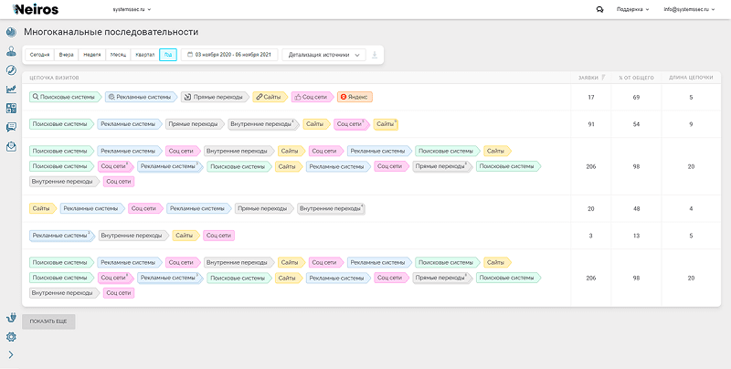

Редко бывает так, что пользователь впервые заходит на сайт и сразу же делает заказ. Чаще на этапе выбора человек посещает много ресурсов, а на некоторых бывает по несколько раз, прежде чем определяется с товаром и заказывает его. При этом общедоступные бесплатные системы сбора статистики фиксируют только последний переход на сайт, хотя есть и предыдущие, ведь ранее пользователь мог заходить с рекламы много раз. Узнать все значимые источники трафика поможет отчет многоканальных последовательностей.

Что такое многоканальные последовательности
Многоканальная последовательность – это путь конверсии, который позволяет отследить все точки касания с клиентом вплоть до совершения покупки.
Существует отдельная группа отчетов «Многоканальные последовательности», которая содержит данные о транзакциях по каждому источнику. Их важно отслеживать и учитывать, чтобы понимать, как конверсия сайта меняется в зависимости от эффективности отдельно взятого рекламного канала.
Чтобы был понятен принцип работы, мы привели простой пример процесса совершения покупки через веб-сайт.
Как пользователь делает покупку
Предположим, что компания продает электротехнические товары. Возможный клиент – владелец дома, который своими силами делает ремонт. Ему понадобятся электротовары, но он мало в них разбирается и пока не знает, что конкретно ищет.
{kind=link}
Чтобы узнать, как выбрать устройство, открывает поисковик и случайно попадает на сайт компании. Ему нравится выбор, устраивают цены и общие условия, но он по-прежнему не знает, что именно покупать, и возвращается в поисковик, а сайт закрывает.
Когда становится известна модель нужного устройства, пользователь снова идет в поисковик, но на этот раз ищет магазин. Здесь уже работает реклама и маркетинг. Зайдя на сайт компании, он вспоминает, что уже был здесь, и решает оформить заказ. Но другие срочные расходы на ремонт отвлекают от покупки, поэтому человек просто сохраняется страницу. Через время возвращается и делает заказ.
В этом случае у компании с покупателем выстраивается следующая цепочка взаимодействий:
- Переход из поисковой выдачи.
- Переход по рекламной ссылке.
- Переход по прямой ссылке.
В зависимости от разных факторов, эта цепочка может меняться, но каждый переход на сайт будет обязательно зафиксирован в отчетах.
Главные преимущества
{kind=link}
- Разносторонний подход. Можно узнать, сколько шагов проделывает клиент перед покупкой, как именно он идет к заказу, определить, насколько эффективна рекламная кампания в денежном эквиваленте.
- Наглядность. Представлены не «голые» цифры, а данные в виде диаграмм, графиков, которые помогают собрать материалы и сделать выводы.
- Возможность анализировать поведение ЦА. Можно проверить, сколько времени покупателям требуется, чтобы принять решение, возвращаются ли они на сайт, реагируют ли на контекст и т. д.
Зачем нужны многоканальные последовательности
В борьбе за конверсию используются разные маркетинговые каналы, и задача многоканальных последовательностей – оценить их. При этом необходимо считать все точки взаимодействия с покупателем, а не только конечный результат.
Оценка лишь конверсий не позволяет увидеть целостную картину. Бывает, что низкоконверсионный канал, который вы хотите отключить, играет важную роль на пути клиента к покупке. Это особенно актуально для бизнеса с длинным циклом и множеством дополнительных контактов.
Именно многоканальные последовательности помогают проследить, как клиенты совершают целевые действия. Благодаря этому можно оптимизировать процесс продаж и повышать эффективность маркетинговых стратегий.
Когда нужны многоканальные последовательности и можно ли обойтись без них
Потребность в последовательностях обусловлена количеством касаний в цикле продаж. Если фирма оказывает услуги или магазин реализует товар, который покупают практически сразу, с одного-двух касаний, сразу понятно, что приносит клиентов и нуждается в поддержке, развитии. Такими товарами могут быть продукты питания, бытовая химия, недорогие изделия массового потребления (одежда, канцелярия и подобные).
Если клиентам нужно время для принятия решения, касаний в цепочке будет больше, и в подобных проектах мультиканальные последовательности особенно полезны. К таким продуктам можно отнести брендовые вещи и аксессуары, драгоценности, прочие уникальные и дорогие товары, покупая которые, клиент тщательно выбирает, читает отзывы и комментарии, сравнивает цены. Именно в длинных циклах большое число взаимодействий может приносить высокий доход.
На базе id браузера (client) невозможно отследить весь путь пользователя, если он заходит на сайт с разных устройств и при этом не авторизован. В то же время id личного кабинета (user id) позволяет сделать это.
Можно ли не отслеживать многоканальные последовательности
Если не требуется глубокая обработка рекламной политики, вполне можно обойтись без многоканальных последовательностей. Более того, некоторые маркетологи даже не знают об этом инструменте. Также он не нужен стартапам и бизнесу в начале работы, который запускает свои первые рекламные кампании.
Если же фирма уже некоторое время проработала и нуждается в оптимизации рекламы, без данных о многоканальной последовательности можно допустить серьезные ошибки.
Как группировать каналы
Группировку можно выполнять по умолчанию, но этот способ имеет подводные камни. Так, одно значение может относиться параллельно к разным каналам. Например, группа «yandex-direct/cpc», которая должна показывать источник, одновременно дает информацию по ретаргетингу, РСЯ и рекламе в поисковой выдаче. В соответствии с этим, показатели по всей группе будут некорректными.
Чтобы получать актуальные результаты, лучше создавать свои группы каналов.
Рассмотрим пример создания на основе штатной группы «yandex-direct». Этот источник включает рекламные кампании в РСЯ, в поисковой выдаче по ключевым словам и наименованию бренда.
Для корректного отображения источников, «yandex-direct» следует разбить на 3 отдельные группы: РСЯ, поиск, бренд.
- В панели администратора в представлении кликните на «Собственная группа каналов».
- Нажмите на кнопку «Новая группа каналов».
- Введите название группы и задайте условия соответственно для поиска, бренда и РСЯ.
Теперь при анализе конверсий следует выбирать не стандартные, а вновь созданные персональные группы для более точной оценки влияния каждого канала.
Этот же алгоритм актуален для детализации каждого рекламного канала.
Группы каналов
По умолчанию Google Analytics присваивает источникам трафика стандартные метки. Приводим полный перечень групп, которые назначаются автоматически.
- Organic Search – поисковая выдача.
- Paid Search – контекстная реклама.
- Direct – прямой заход.
- Social – социальные сети.
- Affiliates – партнерские сайты.
- Email – email-рассылки.
- Display – баннерная реклама и реклама в СМИ.
- Referral – трафик переходов с сайтов.
- Other Advertising – нераспознанный трафик.
Как применять отчет по многоканальным последовательностям
Когда данные по последовательностям получены, важно правильно их использовать в процессе аналитики эффективности рекламных объявлений.
{kind=link}
Для этого:
- Оцените, как ведут себя пользователи и сколько времени им нужно на принятие решения. Будет понятно, какой путь проходят клиенты до совершения покупки.
- Проанализируйте точку первого касания. Каналы, которые вовлекают новых клиентов в цепочку, стоит рассмотреть ближе. Эти источники отображаются в отчете Google Analytics «Основные пути до конверсии». Желательно использовать все значимые каналы, чтобы не терять клиентов.
- Оцените, сколько стоит привлечение одного покупателя. Можно просчитать, сколько в среднем денег приходится тратить, чтобы привлечь одного клиента. При этом в длинных цепочках стоимость покупателя может быть значительно выше за счет затрат на каждое промежуточное касание.
- Определите, какую роль в цепочке продаж играют конкретные рекламные кампании. Некоторые из них могут не приносить очевидных результатов, но это не значит, что рекламная кампания бесполезна. Из отчета «Ассоциированные конверсии» можно понять, что она является важным этапом в достижении конверсии, а отключение может значительно снизить число продаж.
UX и многоканальные последовательности
Данные по последовательностям также используют для получения информации о пользователях: их поведении, реакциях на рекламу, ответных и прочих действиях.
{kind=link}
Об этом нужно знать, чтобы сделать 1-й этап воронки максимально широким. Посмотреть источник, откуда посетитель зашел на ресурс или в интернет-магазин впервые, можно в отчете Google Analytics по модели «Первое взаимодействие» (Конверсия – Атрибуция – Инструмент сравнения).
Все люди ведут себя по-разному: заходят, смотрят, закрывают страницу, потом возвращаются через время и снова уходят, потом приходят и сразу покупают. Кажется, что движения хаотичны и понять их сложно, но, если хорошо управлять рекламой, можно проследить, что влияет на принятие определенных решений покупателями. Ответ на этот вопрос можно найти в отчете Google по ссылке Конверсии – Многоканальные – Основные пути конверсии.
В большинстве сфер клиенты решают купить товар в первый же день в 60% случаев. Реже решение принимается за два-три дня. Чем дороже продукт, тем дольше думает покупатель. В этом можно убедиться, просмотрев отчет Google Конверсии – Многоканальные – Время до конверсии.
Даже если клиент делает заказ в 1-й день, покупке могут предшествовать несколько визитов на сайт. По статистике, около 75% покупателей взаимодействуют с сайтом до 4 раз перед заказом. Посмотреть эту информацию можно в отчете Google Конверсии – Многоканальные – Длина последовательности.
Многоканальные последовательности в Google Analytics
Стандартные счетчики Google Analytics позволяют просмотреть лишь последние либо последние значимые каналы. Но есть возможность узнать и о более ранних источниках. В этом помогают отчеты, посмотреть которые можно следующим образом:
- Зайдите в Google Analytics.
- Выберите подборку отчетов (по умолчанию – Все данные по сайту).
- В левом меню откройте по клику Отчеты, затем Конверсии – Многоканальные последовательности.
В выпадающем списке отобразятся все отчеты, из которых останется выбрать один для просмотра данных.
Типы отчетов
Google Analytics позволяет отследить данные по многоканальным последовательностям по умолчанию за последний месяц. Период отображения можно установить вручную от 1 до 90 дней.
Здесь для каждого источника доступно до 5 000 касаний в рамках практических всех распространенных digital-каналов. Обновление данных о конверсиях в отчетах совершается после каждого изменения.
Обзор
{kind=link}
В отчете в виде диаграммы показаны конверсионные каналы. Выбрать отображение нужных можно в списке слева, где они расположены по убыванию значимости в плане конверсии.
Ассоциированные конверсии
Работая с каналами, нужно учитывать, что в цепочке продаж каждый из них может сыграть 3 роли:
- первый контакт – первичное взаимодействие с посетителем;
- последний контакт – переход, предшествующий конверсии;
- вспомогательные контакты – все взаимодействия с пользователем, кроме последнего.
Вспомогательные взаимодействия отслеживают с помощью ассоциированных конверсий.

В Google оценить пользу канала можно с помощью коэффициента суммарного вклада. Чем он больше, тем выше эффективность.
Есть нюансы.
- Учитывается только одна вспомогательная конверсия, даже если в цепочке продаж было несколько вспомогательных взаимодействий по одному источнику..
- Если на одном пути клиента два вспомогательных канала, ассоциированная конверсия фиксируется для обоих.
- Повторные конверсии со стороны одного и того же покупателя засчитываются в разные пути.
- Конверсия, совершенная при посещении сайта по прямой ссылке, будет отнесена к прямому каналу.
Основные пути конверсии
Отчет показывает цепочки каналов, с которых приходило больше всего клиентов.
{kind=link}
Таким образом, здесь можно отследить количество и стоимость конверсий, а также конкретные источники трафика из:
- органической выдачи;
- контекстной рекламы;
- прямых заходов;
- партнерок;
- рассылок по email;
- социальных сетей.
Время до конверсии

В этом отчете можно увидеть, сколько дней проходит от знакомства с брендом до совершения покупки или другого целевого действия (конверсии). Также сервис собирает данные о количестве конверсий в путях от 0 до 12 дней и более. Все это позволяет рассчитать нужную длительность цикла продаж через интернет.
Длина последовательности

Здесь можно увидеть, сколько касаний с потенциальным покупателем требуется для конверсии. Эта информация дает возможность выстроить адекватную последовательность и реалистичные ожидания в плане срока привлечения покупателей и стоимости.
Инструмент сравнения модулей
{kind=link}
Позволяет сравнивать несколько моделей атрибуции по количеству конверсий. Также можно задавать уникальные атрибуции с учетом ценности разных источников трафика и особенностей бизнеса.
Как создать пользовательскую группу каналов
Кроме стандартных групп каналов, в Google Analytics можно создавать неограниченное количество новых с нуля или по шаблону. Для этого нужно:
- Открыть отчет «Ассоциированные конверсии» или «Основные пути конверсии».
- Отметить ключевой параметр «Группы каналов» и выбрать «Создать пользовательскую группу каналов».
- Прописать имя новой группы.
- Для каждой метки кликнуть «Добавить канал».
- «Готово» и «Сохранить».
Вручную созданную группу можно удалить, скопировать или открыть к ней доступ.
{kind=link}
Для этого в меню «Администратор» нужно:
- выбрать нужное представление;
- выбрать «Собственная группа каналов»;
- развернуть меню «Действия» и выбрать подходящее.
Особенности:
- правила обрабатываются путем перечисления;
- минимум одна метка присваивается каждой группе;
- если канал не соответствует первой метке, то переходит ко второй. Если канал не соответствует ни одной метке, ему присваивается метка «Другое».
Сегментирование данных о путях конверсии
Google Analytics позволяет задать определенные наборы путей и проанализировать их в отчетах. Цепочки можно разбивать на сегменты по ценности конверсии первого касания, затем в отчетах будут отображаться данные по этому сегменту в сравнении с остальными.
Также можно создавать свои сегменты конверсии. Для этого нужно:
- Открыть отчет по ассоциированным конверсиям.
- Выбрать Сегменты конверсии, затем кликнуть на ссылку «Создать сегмент конверсии».
- Указать имя нового сегмента.
- Прописать пути конверсии.
- Сохранить сегмент.
{kind=link}
{kind=link}
Если выбрать созданный сегмент в списке пользовательских сегментов, он будет оставаться активным при переходе к другим отчетам.
Для изменения или удаления нужно:
- В разделе «Пользовательские сегменты» отметить нужный сегмент.
- Кликнуть «Изменить».
- Отредактировать, а затем сохранить изменения или нажать «Удалить сегмент».
Нюансы отчетов Google Analytics
Анализировать отчеты в Google Analytics стоит с учетом ряда особенностей.
- Задержка в отображении данных может достигать 2 суток.
- Если пользователь совершает повторные действия, они будут отнесены к разным конверсиям.
- Модель атрибуции по умолчанию – по последнему непрямому переходу.
- Ассоциированных конверсий обычно больше, чем прямых из-за того, что в цепочке взаимодействий участвуют все источники трафика.
Яндекс Метрика и многоканальные последовательности
В отличие от Google Analytics, Яндекс.Метрика не дает настолько подробных данных, однако подобный по смыслу отчет сформировать все же можно.
Отчеты – Стандартные отчеты – Источники – Источники, сводка
{kind=link}
Здесь будут доступны данные о количестве прямых посещений сайта, переходов с других ресурсов (сайты, соцсети, мессенджеры и т. д.), внутренних переходов.
Также можно обозначить цель, на которую будем ориентироваться при оценке эффективности каждого канала. Метрика позволяет создать перечень источников трафика, из которых приходили клиенты, чаще всего достигающие поставленной цели.
Изначально цели привязываются к источнику последнего перехода, но это можно изменить. В выпадающем списке доступны другие модели атрибуции, но их не так много, как в Google Analytics.
Примеры использования многоканальных последовательностей
Пример длинной цепочки взаимодействий
{kind=link}
- Пользователь сидел в facebook и увидел рекламу смартфона, который его заинтересовал. Перешел по рекламе, полистал интернет-магазин и закрыл, т. к. в тот момент не было денег на покупку.
- Спустя неделю листал интернет, читал интересные статьи в блоге и случайно кликнул по рекламе. Оказался на странице того же смартфона, но внезапно позвонил телефон, и пользователь закрыл сайт.
- Спустя месяц пользователь вспомнил о классном смартфоне, который когда-то смотрел. Отправился на форумы, почитал отзывы, кейсы и взял паузу, чтобы подумать. Дела отвлекли, и идея совершить покупку забылась.
- Отправляясь в гугл-поиск, пользователь встречает уже знакомый рекламный блок и переходит по рекламе. Покупка лишь в планах, но, чтобы в очередной раз не потерять товар и получать интересные новости от компании, решает подписаться на рассылку: оставляет свой email-адрес, соглашаясь с политикой конфиденциальности.
- Спустя пару недель на email приходит письмо с предложением купить заветный смартфон с хорошей скидкой. Недолго думая, пользователь переходит на сайт и делает заказ.
Пример короткой цепочки взаимодействия
{kind=link}
- Мама ищет подарок к Новому году ребенку, но пока не нашла ничего подходящего. По запросу в поисковике видит интересное название и переходит по рекламной ссылке. Игрушка оказывается подходящей по всем параметрам, но дорогой и с платной доставкой по России. Мама решает подумать.
- Через пару дней во ВКонтакте появляется реклама этой же игрушки. Так как до сих пор ничего лучше не куплено, а праздник уже скоро, мама кликает по баннеру, переходит на сайт и оформляет заказ.
Частые вопросы
Прежде всего, нужно поставить конкретную цель: экономия денег или увеличение продаж. Если вам важнее меньше потратить на рекламу, размер экономии очень индивидуален. Используя только контекстную рекламу и SEO-продвижение, сильно сократить бюджет не получится. Значительно сэкономить можно, если задействовать практически все каналы, которые будут пересекаться друг с другом.
В первую очередь стоит проанализировать рекламные кампании, которые планируется отключать. Многие принимают это решение по результатам модели последнего взаимодействия. Однако нужно обратить внимание, сколько рекламная компания принесла денег в целом. Возможно, она участвует в ассоциированных конверсиях и имеет большое значение.
Ничего, кроме Google Analytics. Он автоматически собирает нужные данные по уже настроенным целям и на базе модуля электронной торговли. Если они до сих пор не настроены, начните именно с этого.
Поскольку в отчетах собираются данные за последние 30 дней до совершения целевого действия, есть вероятность следующей ситуации: пользователь попал на сайт впервые 2 июня, затем вернулся по ремаркетингу 21 июня, а еще позже пришел с органической выдачи 15 июля. Вы просматриваете отчет 17 июля и видите «ремаркетинг», т. к. самый первый визит уже исключен из выдачи по прошествии 30 дней. Этот период можно настраивать вручную до максимальных 90 дней.
Заключение
Ситуации, когда пользователь приходит на сайт впервые и сразу становится клиентом, очень редки. Чаще человек выбирает, читает отзывы, сравнивает характеристики товара, посещая сайт несколько раз до того, как решит купить. В этом случае важно отследить, какой путь он проходит, начиная от первого касания.
Оставить комментарий
Войти с помощью